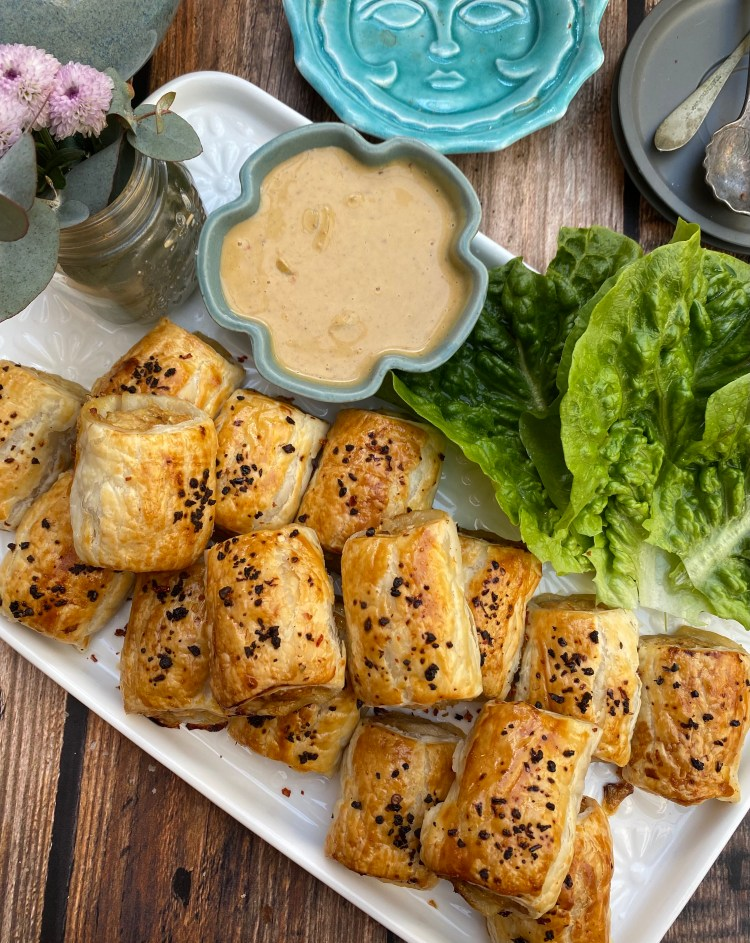

Satay Chicken Sausage Rolls

Description
To whoever invented the sausage rolls, satay chicken in puff pastry must be sacrilegious. I apologise in advance to the purist but hear me out. It really is delicious, easy to prepare and can be just as good as the original pork and bacon sausage roll. So let’s give the satay version a go, hey? This is a crowd pleaser and easy enough to do ahead where you prepare everything and then bake when required.
Ingredients
Sausage rolls
- 500g minced chicken
- 1/4 cup breadcrumbs
- 4 cloves garlic, peeled and minced
- 1 medium onion finely diced
- 1 egg beaten, 1 egg extra for glazing
- 2 teaspoons soy sauce
- 2 teaspoons Jimmy’s Satay sauce
- 3 sheets puff pastry halved lengthwise
- Sesame seeds or chilli flakes for sprinkle
- Salt and pepper to taste
Satay Sauce
- 1/4 cup peanut butter
- Juice of half lemon
- 2 teaspoons soy sauce
- 2 Tablespoons sweet chilli sauce
- 2 teaspoons brown sugar
- 1 teaspoon Jimmy’s Satay Sauce
Steps
Sausage rolls
- Preheat oven to 170c . In a large bowl mix together all the filling ingredients except the puff pastry
- Divide filling into six portions. Shape filling portions into logs. Lay one of the puff pastry sheets in worktop. Place one log into the pastry sheet lengthwise. Roll pastry to enclose filling and place seam side down on a baking tray. Cut into six equal pieces for mini rolls or five pieces for regular sized. Repeat with remaining pastry and filling.
- Brush rolls with beaten egg. Sprinkle rolls with sesame seeds or chilli flakes.
- Bake for 20 minutes or until cooked through and golden
- Serve with satay sauce recipe below.
Satay Sauce
- In a small bowl combine sauce ingredients together until smooth. Add a few teaspoons of hot water until the desired consistency.
Notes
Makes about 30 or 90 minis. Jimmy’s Satay sauce is available from most Asian stores